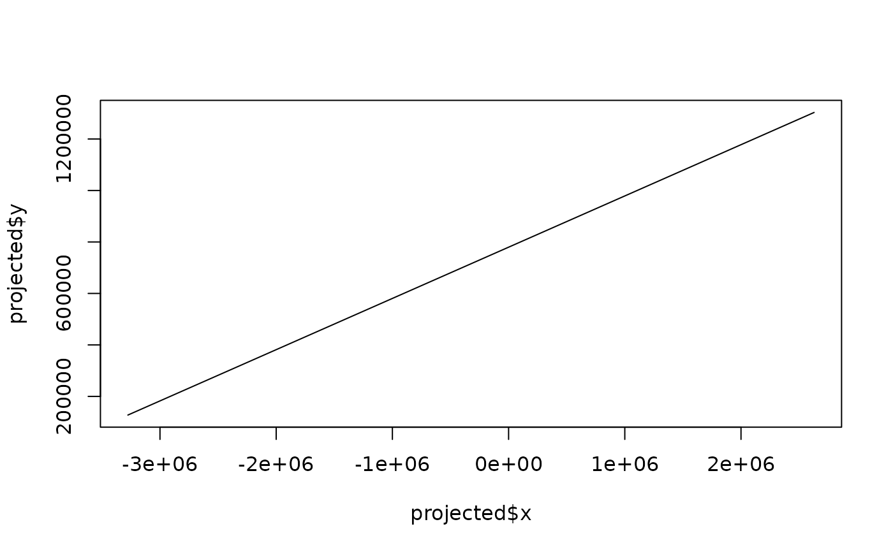

Convert between geographic coordinates and the gnomonic projection. In this projection, geodesics (shortest paths) appear as straight lines, making it useful for navigation and great circle route planning.
gnomonic_fwd(x, lon0, lat0)
gnomonic_rev(x, y, lon0, lat0)For forward conversion: a two-column matrix or data frame of coordinates (longitude, latitude) in decimal degrees. For reverse conversion: numeric vector of x coordinates in meters.
Longitude of the projection center in decimal degrees.
Latitude of the projection center in decimal degrees.
Numeric vector of y coordinates in meters.
Data frame with columns:
For forward conversion:
x: X coordinate in meters
y: Y coordinate in meters
azi: Azimuth of the geodesic at the center (degrees)
rk: Reciprocal of the azimuthal scale
lon, lat: Input coordinates (echoed)
For reverse conversion:
lon: Longitude in decimal degrees
lat: Latitude in decimal degrees
azi: Azimuth of the geodesic at the center (degrees)
rk: Reciprocal of the azimuthal scale
x, y: Input coordinates (echoed)
The gnomonic projection has a unique property: all geodesics (great circles on a sphere, shortest paths on an ellipsoid) appear as straight lines. This makes it invaluable for:
Planning great circle routes in aviation and shipping
Seismic ray path analysis
Radio wave propagation studies
Limitations:
Can only show less than a hemisphere
Extreme distortion away from the center
Neither conformal nor equal-area
azeq_fwd() for azimuthal equidistant projection
# Project cities relative to London
cities <- cbind(
lon = c(-74, 139.7, 151.2, 2.3),
lat = c(40.7, 35.7, -33.9, 48.9)
)
gnomonic_fwd(cities, lon0 = -0.1, lat0 = 51.5)
#> x y azi rk lon lat
#> 1 -7258985.5 2411279.2 -128.7635 0.64072159 -74.0 40.7
#> 2 46796001.7 75878096.6 156.2494 0.07150066 139.7 35.7
#> 3 NaN NaN 139.2137 -0.88597093 151.2 -33.9
#> 4 176156.3 -286620.1 150.2696 0.99861359 2.3 48.9
# Great circle route appears as straight line
# London to NYC path
path <- geodesic_path(c(-0.1, 51.5), c(-74, 40.7), n = 10)
projected <- gnomonic_fwd(cbind(path$lon, path$lat), lon0 = -37, lat0 = 46)
# x and y should be approximately linear
plot(projected$x, projected$y, type = "l")
